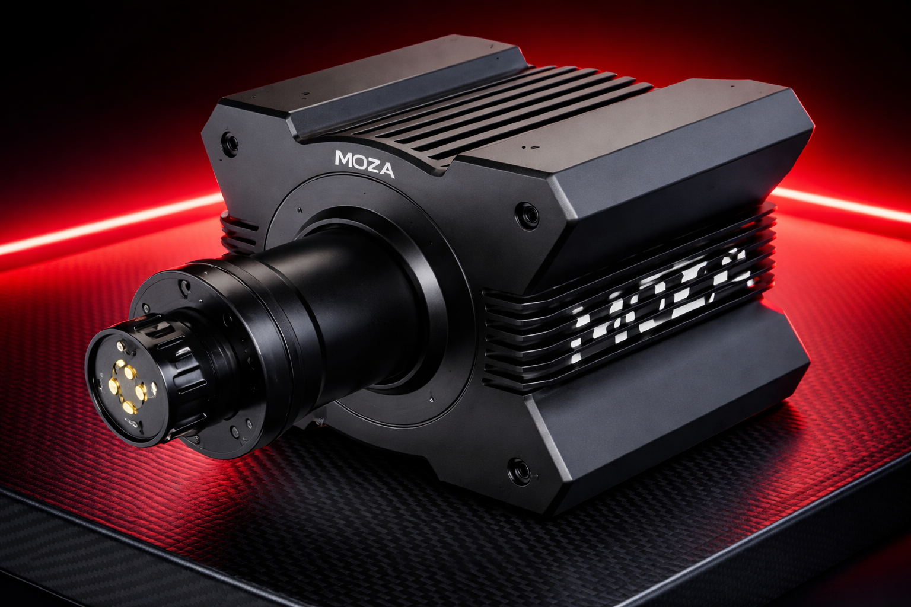
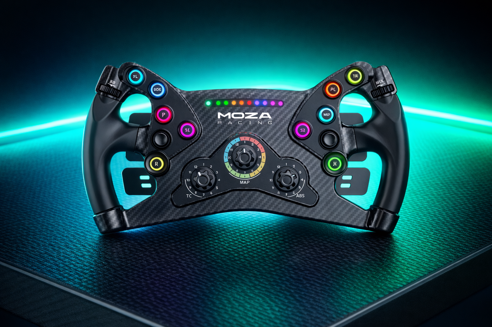
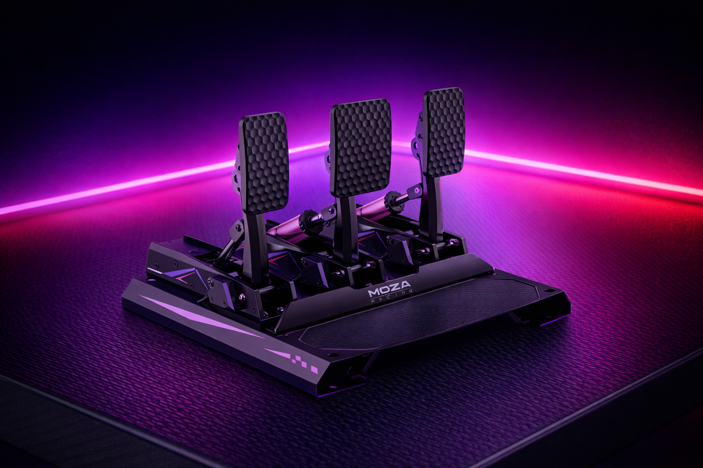

Bases
Bases Direct Drive
El motor principal que transmite el Force Feedback directamente al eje del volante.
Ver Bases
El motor principal que transmite el Force Feedback directamente al eje del volante.
Ver Bases
Diferentes tipos de aros: tipo Formula, GT o circulares para rally y drift.
Ver Volantes
Sistemas de acelerador, freno con célula de carga y embrague para máxima precisión.
Ver Pedales